| Name | Description |
|---|---|
| A first simple Modelica_StateGraph2 example | |
| Same as FirstExample, but using an autonomous Parallel step to start the graph and not an initial step | |
| Same as FirstExample, but formulating the transition condition of T2 with logical blocks | |
| Same as FirstExample_Variant3, but without a delayed transition (by switching the check off) | |
| Example to demonstrate a sequence of simple steps | |
| Example of a composite step | |
| Example of a composite step as submodel | |
| Example to demonstrate parallel execution paths | |
| Same as example ParallelBranches, but the parallel execution path is suspended and then resumed from the inPort | |
| Demonstrates that a delay in one branch of a Parallel is sufficient so that no infinite event looping occurs | |
| Demonstrates that a delay outside of a Parallel is sufficient so that no infinite event looping occurs | |
| Demonstrates Parallel that runs autonomously | |
| Demonstrates MultiSwitch and ShowValue | |
| Demonstrates rising and falling edge action blocks | |
| Demonstrates usage of TriggeredAdd action block | |
| Demonstrates usage of MultiSwitch block for branches executing in parallel | |
| Utility models used in the examples |
 Modelica_StateGraph2.Examples.BasicStateGraphs.FirstExample
Modelica_StateGraph2.Examples.BasicStateGraphs.FirstExample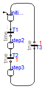
Extends from Modelica.Icons.Example (Icon for runnable examples).
model FirstExample "A first simple Modelica_StateGraph2 example" extends Modelica.Icons.Example;Modelica_StateGraph2.Step initialStep( nIn=1, nOut=1, initialStep=true); Modelica_StateGraph2.Transition T1( condition=time > 2); Modelica_StateGraph2.Step step2( nIn=1, nOut=1); Modelica_StateGraph2.Transition T2( delayedTransition=true, waitTime=1); Modelica_StateGraph2.Step step3( nIn=1, nOut=1); Modelica_StateGraph2.Transition T3( delayedTransition=true, waitTime=1); equationconnect(initialStep.outPort[1], T1.inPort); connect(T1.outPort, step2.inPort[1]); connect(step2.outPort[1], T2.inPort); connect(T2.outPort, step3.inPort[1]); connect(step3.outPort[1], T3.inPort); connect(T3.outPort, initialStep.inPort[1]); end FirstExample;
Modelica_StateGraph2.Examples.BasicStateGraphs.FirstExample_Variant2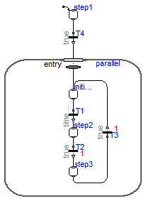
model FirstExample_Variant2 "Same as FirstExample, but using an autonomous Parallel step to start the graph and not an initial step" extends Modelica.Icons.Example;Parallel parallel( use_inPort=true, nEntry=1, nIn=1, initialStep=false); Modelica_StateGraph2.Step initialStep( nIn=2, nOut=1); Modelica_StateGraph2.Transition T1( condition=time > 2); Modelica_StateGraph2.Step step2( nIn=1, nOut=1); Modelica_StateGraph2.Transition T2( delayedTransition=true, waitTime=1); Modelica_StateGraph2.Step step3( nIn=1, nOut=1); Modelica_StateGraph2.Transition T3( delayedTransition=true, waitTime=1); Modelica_StateGraph2.Step step1( initialStep=true, nOut=1); Modelica_StateGraph2.Transition T4; equationconnect(parallel.entry[1], initialStep.inPort[1]); connect(initialStep.outPort[1], T1.inPort); connect(T1.outPort, step2.inPort[1]); connect(step2.outPort[1], T2.inPort); connect(T2.outPort, step3.inPort[1]); connect(step3.outPort[1], T3.inPort); connect(T3.outPort, initialStep.inPort[2]); connect(step1.outPort[1], T4.inPort); connect(T4.outPort, parallel.inPort[1]); end FirstExample_Variant2;
Modelica_StateGraph2.Examples.BasicStateGraphs.FirstExample_Variant3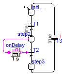
model FirstExample_Variant3 "Same as FirstExample, but formulating the transition condition of T2 with logical blocks" extends Modelica.Icons.Example;Modelica_StateGraph2.Step initialStep( nIn=1, initialStep=true, use_activePort=false, nOut=1); Modelica_StateGraph2.Transition T1( use_conditionPort=false, condition=time > 2); Modelica_StateGraph2.Step step2( use_activePort=true, nIn=1, nOut=1); Modelica_StateGraph2.Transition T2( use_conditionPort=true, delayedTransition=false); Modelica_StateGraph2.Step step3( nOut=1, nIn=1); Modelica_StateGraph2.Transition T3( delayedTransition=true, waitTime=1); Blocks.MathBoolean.OnDelay onDelay(delayTime=1); equationconnect(step3.outPort[1], T3.inPort); connect(T3.outPort, initialStep.inPort[1]); connect(initialStep.outPort[1], T1.inPort); connect(T1.outPort, step2.inPort[1]); connect(step2.outPort[1], T2.inPort); connect(T2.outPort, step3.inPort[1]); connect(onDelay.y, T2.conditionPort); connect(step2.activePort, onDelay.u); end FirstExample_Variant3;
Modelica_StateGraph2.Examples.BasicStateGraphs.FirstExample_Variant4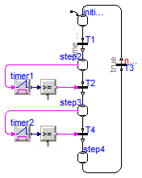
model FirstExample_Variant4 "Same as FirstExample_Variant3, but without a delayed transition (by switching the check off)" extends Modelica.Icons.Example;Modelica_StateGraph2.Step initialStep( nIn=1, initialStep=true, use_activePort=false, nOut=1); Modelica_StateGraph2.Transition T1( use_conditionPort=false, condition=time > 2); Modelica_StateGraph2.Step step2( use_activePort=true, nIn=1, nOut=1); Modelica_StateGraph2.Transition T2( use_conditionPort=true, delayedTransition=false); Modelica_StateGraph2.Step step3( use_activePort=true, nIn=1, nOut=1); Modelica_StateGraph2.Transition T3( delayedTransition=false, loopCheck=false); Modelica.Blocks.Logical.Timer timer1; Modelica.Blocks.Logical.GreaterEqualThreshold greaterEqual(threshold=1); Modelica_StateGraph2.Step step4( nOut=1, use_activePort=false, nIn=1); Modelica_StateGraph2.Transition T4( use_conditionPort=true, delayedTransition=false); Modelica.Blocks.Logical.Timer timer2; Modelica.Blocks.Logical.GreaterEqualThreshold greaterEqual1( threshold=1); equationconnect(T3.outPort, initialStep.inPort[1]); connect(timer1.y, greaterEqual.u); connect(greaterEqual.y, T2.conditionPort); connect(step2.activePort, timer1.u); connect(step4.outPort[1], T3.inPort); connect(timer2.y, greaterEqual1.u); connect(greaterEqual1.y, T4.conditionPort); connect(step3.activePort, timer2.u); connect(initialStep.outPort[1], T1.inPort); connect(T1.outPort, step2.inPort[1]); connect(step2.outPort[1], T2.inPort); connect(T2.outPort, step3.inPort[1]); connect(step3.outPort[1], T4.inPort); connect(T4.outPort, step4.inPort[1]); end FirstExample_Variant4;
Modelica_StateGraph2.Examples.BasicStateGraphs.Sequence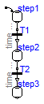
model Sequence "Example to demonstrate a sequence of simple steps" extends Modelica.Icons.Example;Modelica_StateGraph2.Step step1( initialStep=true, nOut=1); Modelica_StateGraph2.Transition T1( condition=time > 1); Modelica_StateGraph2.Step step2( nIn=1, nOut=1); Modelica_StateGraph2.Transition T2( condition=time > 2); Modelica_StateGraph2.Step step3( nIn=1); equationconnect(step1.outPort[1], T1.inPort); connect(T1.outPort, step2.inPort[1]); connect(step2.outPort[1], T2.inPort); connect(T2.outPort, step3.inPort[1]); end Sequence;
Modelica_StateGraph2.Examples.BasicStateGraphs.Composite1

model Composite1 "Example of a composite step" extends Modelica.Icons.Example;Modelica_StateGraph2.Step step1( initialStep=true, nIn=1, nOut=1); Parallel parallel( initialStep=false, use_inPort=true, use_outPort=true, nEntry=1, nOut=1, use_suspend=true, nResume=1, nExit=1, nSuspend=1, nIn=1); Modelica_StateGraph2.Transition T1( delayedTransition=true, waitTime=1); Modelica_StateGraph2.Step step3( nIn=2, nOut=1); Modelica_StateGraph2.Transition T2( delayedTransition=true, waitTime=1); Modelica_StateGraph2.Step step4( nOut=2, nIn=1); Modelica_StateGraph2.Transition T3( delayedTransition=true, waitTime=1); Modelica_StateGraph2.Transition T4( condition=time > 3.5 and time <= 4.5); Modelica_StateGraph2.Step step5( nOut=1, nIn=1); Modelica_StateGraph2.Transition T5( delayedTransition=true, waitTime=2); Modelica_StateGraph2.Transition T6( delayedTransition=true, waitTime=1); Modelica_StateGraph2.Step step6( nIn=1, nOut=1); Modelica_StateGraph2.Transition T7( waitTime=1, delayedTransition=false, condition=time > 2.5 and time < 4.5); equationconnect(parallel.entry[1], step3.inPort[1]); connect(parallel.outPort[1], T3.inPort); connect(T3.outPort, step1.inPort[1]); connect(T5.outPort, parallel.resume[1]); connect(T6.inPort, step4.outPort[1]); connect(step4.outPort[2], T7.inPort); connect(T7.outPort, step3.inPort[2]); connect(T4.inPort, parallel.suspend[1]); connect(step5.outPort[1], T5.inPort); connect(T4.outPort, step5.inPort[1]); connect(T6.outPort, step6.inPort[1]); connect(step6.outPort[1], parallel.exit[1]); connect(step3.outPort[1], T2.inPort); connect(T2.outPort, step4.inPort[1]); connect(T1.outPort, parallel.inPort[1]); connect(step1.outPort[1], T1.inPort); end Composite1;
Modelica_StateGraph2.Examples.BasicStateGraphs.Composite2

model Composite2 "Example of a composite step as submodel" extends Modelica.Icons.Example;Modelica_StateGraph2.Step step1( nOut=1, initialStep=true, nIn=1); Modelica_StateGraph2.Transition T1( delayedTransition=true, waitTime=1); Modelica_StateGraph2.Transition T3( delayedTransition=true, waitTime=1); Modelica_StateGraph2.Transition T4( condition=time > 3.5 and time <= 4.5); Modelica_StateGraph2.Step step5( nIn=1, nOut=1); Modelica_StateGraph2.Transition T5( delayedTransition=true, waitTime=2); Utilities.Composite2_Subgraph step2( initialStep=false, use_suspend=true, nIn=1, nOut=1, nSuspend=1, nResume=1); equationconnect(step1.outPort[1], T1.inPort); connect(T3.outPort, step1.inPort[1]); connect(step5.outPort[1], T5.inPort); connect(T4.outPort, step5.inPort[1]); connect(T1.outPort, step2.inPort[1]); connect(step2.outPort[1], T3.inPort); connect(step2.suspend[1], T4.inPort); connect(step2.resume[1], T5.outPort); end Composite2;
Modelica_StateGraph2.Examples.BasicStateGraphs.ParallelBranches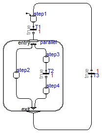
model ParallelBranches "Example to demonstrate parallel execution paths" extends Modelica.Icons.Example;Modelica_StateGraph2.Step step1( nOut=1, initialStep=true, nIn=1); Parallel parallel( initialStep=false, use_inPort=true, use_outPort=true, nIn=1, nEntry=2, nOut=1, nExit=2); Modelica_StateGraph2.Transition T1( delayedTransition=true, waitTime=1); Modelica_StateGraph2.Step step2( nIn=1, nOut=1); Modelica_StateGraph2.Step step3( nOut=1, nIn=1); Modelica_StateGraph2.Transition T2( delayedTransition=true, waitTime=1); Modelica_StateGraph2.Step step4( nOut=1, nIn=1); Modelica_StateGraph2.Transition T3( delayedTransition=true, waitTime=1); equationconnect(step1.outPort[1], T1.inPort); connect(T1.outPort, parallel.inPort[1]); connect(step3.outPort[1], T2.inPort); connect(parallel.entry[1], step2.inPort[1]); connect(parallel.entry[2], step3.inPort[1]); connect(T2.outPort, step4.inPort[1]); connect(parallel.outPort[1], T3.inPort); connect(T3.outPort, step1.inPort[1]); connect(step2.outPort[1], parallel.exit[1]); connect(step4.outPort[1], parallel.exit[2]); end ParallelBranches;
Modelica_StateGraph2.Examples.BasicStateGraphs.ParallelWithSuspendAndNoResume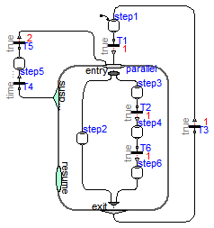
model ParallelWithSuspendAndNoResume "Same as example ParallelBranches, but the parallel execution path is suspended and then resumed from the inPort" extends Modelica.Icons.Example;Modelica_StateGraph2.Step step1( nOut=1, initialStep=true, nIn=1); Parallel parallel( initialStep=false, use_inPort=true, use_outPort=true, nIn=2, nEntry=2, nOut=1, use_suspend=true, nSuspend=1, nResume=0, nExit=2); Modelica_StateGraph2.Transition T1( delayedTransition=true, waitTime=1); Modelica_StateGraph2.Step step2( nIn=1, nOut=1); Modelica_StateGraph2.Step step3( nOut=1, nIn=1); Modelica_StateGraph2.Transition T2( delayedTransition=true, waitTime=1); Modelica_StateGraph2.Step step4( nOut=1, nIn=1); Modelica_StateGraph2.Transition T3( delayedTransition=true, waitTime=1); Modelica_StateGraph2.Transition T4( condition=time > 2.5 and time <= 4); Modelica_StateGraph2.Step step5( nIn=1, nOut=1); Modelica_StateGraph2.Transition T5( delayedTransition=true, waitTime=2); Modelica_StateGraph2.Transition T6( delayedTransition=true, waitTime=1); Modelica_StateGraph2.Step step6( nOut=1, nIn=1); equationconnect(step1.outPort[1], T1.inPort); connect(T1.outPort, parallel.inPort[1]); connect(step3.outPort[1], T2.inPort); connect(parallel.entry[1], step2.inPort[1]); connect(parallel.entry[2], step3.inPort[1]); connect(T2.outPort, step4.inPort[1]); connect(parallel.outPort[1], T3.inPort); connect(T3.outPort, step1.inPort[1]); connect(step5.outPort[1], T5.inPort); connect(T4.outPort, step5.inPort[1]); connect(parallel.suspend[1], T4.inPort); connect(step4.outPort[1], T6.inPort); connect(T6.outPort, step6.inPort[1]); connect(T5.outPort, parallel.inPort[2]); connect(step2.outPort[1], parallel.exit[1]); connect(step6.outPort[1], parallel.exit[2]); end ParallelWithSuspendAndNoResume;
Modelica_StateGraph2.Examples.BasicStateGraphs.ParallelInsideDelay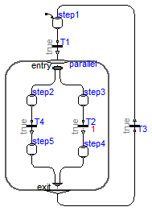
model ParallelInsideDelay "Demonstrates that a delay in one branch of a Parallel is sufficient so that no infinite event looping occurs" extends Modelica.Icons.Example;Modelica_StateGraph2.Step step1( nOut=1, initialStep=true, nIn=1); Parallel parallel( initialStep=false, use_inPort=true, use_outPort=true, nIn=1, nEntry=2, nOut=1, nExit=2); Modelica_StateGraph2.Transition T1( waitTime=1, delayedTransition= false); Modelica_StateGraph2.Step step2( nIn=1, nOut=1); Modelica_StateGraph2.Step step3( nOut=1, nIn=1); Modelica_StateGraph2.Transition T2( waitTime=1, delayedTransition= true); Modelica_StateGraph2.Step step4( nOut=1, nIn=1); Modelica_StateGraph2.Transition T3( waitTime=1, delayedTransition= false); Modelica_StateGraph2.Transition T4( waitTime=1, delayedTransition= false); Modelica_StateGraph2.Step step5( nIn=1, nOut=1); equationconnect(step1.outPort[1],T1. inPort); connect(T1.outPort,parallel. inPort[1]); connect(step3.outPort[1],T2. inPort); connect(parallel.entry[1],step2. inPort[1]); connect(parallel.entry[2],step3. inPort[1]); connect(T2.outPort,step4. inPort[1]); connect(parallel.outPort[1],T3. inPort); connect(T3.outPort,step1. inPort[1]); connect(step2.outPort[1], T4.inPort); connect(T4.outPort, step5.inPort[1]); connect(step5.outPort[1], parallel.exit[1]); connect(step4.outPort[1], parallel.exit[2]); end ParallelInsideDelay;
Modelica_StateGraph2.Examples.BasicStateGraphs.ParallelOutsideDelay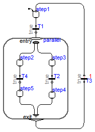
model ParallelOutsideDelay "Demonstrates that a delay outside of a Parallel is sufficient so that no infinite event looping occurs" extends Modelica.Icons.Example;Modelica_StateGraph2.Step step1( nOut=1, initialStep=true, nIn=1); Parallel parallel( initialStep=false, use_inPort=true, use_outPort=true, nIn=1, nEntry=2, nOut=1, nExit=2); Modelica_StateGraph2.Transition T1( waitTime=1, delayedTransition= false); Modelica_StateGraph2.Step step2( nIn=1, nOut=1); Modelica_StateGraph2.Step step3( nOut=1, nIn=1); Modelica_StateGraph2.Transition T2( delayedTransition=false); Modelica_StateGraph2.Step step4( nOut=1, nIn=1); Modelica_StateGraph2.Transition T3( waitTime=1, delayedTransition= true); Modelica_StateGraph2.Transition T4( waitTime=1, delayedTransition= false); Modelica_StateGraph2.Step step5( nIn=1, nOut=1); equationconnect(step1.outPort[1],T1. inPort); connect(T1.outPort,parallel. inPort[1]); connect(step3.outPort[1],T2. inPort); connect(parallel.entry[1],step2. inPort[1]); connect(parallel.entry[2],step3. inPort[1]); connect(T2.outPort,step4. inPort[1]); connect(parallel.outPort[1],T3. inPort); connect(T3.outPort,step1. inPort[1]); connect(step2.outPort[1],T4. inPort); connect(T4.outPort,step5. inPort[1]); connect(step5.outPort[1],parallel. exit[1]); connect(step4.outPort[1],parallel. exit[2]); end ParallelOutsideDelay;
Modelica_StateGraph2.Examples.BasicStateGraphs.ParallelAutonomous

model ParallelAutonomous
"Demonstrates Parallel that runs autonomously"
extends Modelica.Icons.Example;
Parallel parallel(
use_inPort=false,
use_outPort=false,
initialStep=true,
nEntry=2);
Modelica_StateGraph2.Step step2(
nIn=2, nOut=1);
Modelica_StateGraph2.Step step3( nIn=2, nOut=1);
Modelica_StateGraph2.Transition T2( waitTime=1, delayedTransition=
false);
Modelica_StateGraph2.Step step4( nIn=1, nOut=1);
Modelica_StateGraph2.Transition T1( waitTime=1, delayedTransition=
false);
Modelica_StateGraph2.Step step1( nIn=1, nOut=1);
Modelica_StateGraph2.Transition T3( waitTime=1, delayedTransition=
true);
Modelica_StateGraph2.Transition T4( waitTime=1, delayedTransition=
true);
equation
connect(step2.outPort[1], T1.inPort);
connect(T1.outPort, step1.inPort[1]);
connect(step1.outPort[1], T3.inPort);
connect(T3.outPort, step2.inPort[1]);
connect(parallel.entry[1], step2.inPort[2]);
connect(parallel.entry[2], step3.inPort[1]);
connect(step3.outPort[1], T2.inPort);
connect(T2.outPort, step4.inPort[1]);
connect(step4.outPort[1], T4.inPort);
connect(T4.outPort, step3.inPort[2]);
end ParallelAutonomous;
Modelica_StateGraph2.Examples.BasicStateGraphs.Actions1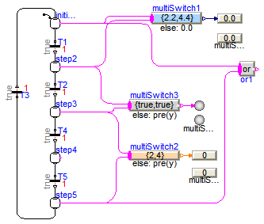
model Actions1 "Demonstrates MultiSwitch and ShowValue"
extends Modelica.Icons.Example;
Modelica_StateGraph2.Step initialStep(
nIn=1,
nOut=1,
initialStep=true,
use_activePort=true);
Modelica_StateGraph2.Transition T1(
use_conditionPort=false,
delayedTransition=true,
waitTime=1);
Modelica_StateGraph2.Step step2(
nIn=1, nOut=1,
use_activePort=true);
Modelica_StateGraph2.Transition T2(
use_conditionPort=false,
delayedTransition=true,
waitTime=1);
Modelica_StateGraph2.Step step3(
nIn=1, nOut=1,
use_activePort=true);
Modelica_StateGraph2.Transition T3(
delayedTransition=true,
waitTime=1);
Modelica_StateGraph2.Step step4(
nIn=1, nOut=1,
use_activePort=true);
Modelica_StateGraph2.Transition T4(
use_conditionPort=false,
delayedTransition=true,
waitTime=1);
Modelica_StateGraph2.Transition T5(
use_conditionPort=false,
delayedTransition=true,
waitTime=1);
Modelica_StateGraph2.Step step5(
nIn=1, nOut=1,
use_activePort=true);
Modelica_StateGraph2.Blocks.MathBoolean.Or or1(
nu=2);
Modelica_StateGraph2.Blocks.MathReal.MultiSwitch multiSwitch1(nu=2, expr={2.2,4.4});
Modelica_StateGraph2.Blocks.MathInteger.MultiSwitch multiSwitch2(nu=2, expr={2,4});
Modelica_StateGraph2.Blocks.MathBoolean.MultiSwitch multiSwitch3(nu=2, expr={true,
true});
Modelica_StateGraph2.Blocks.MathReal.ShowValue showValue1(
use_numberPort=false, number=multiSwitch1.y);
Modelica_StateGraph2.Blocks.MathReal.ShowValue showValue;
Modelica_StateGraph2.Blocks.MathBoolean.ShowValue showValue2(
use_activePort=false, active=multiSwitch3.y);
Modelica_StateGraph2.Blocks.MathBoolean.ShowValue showValue3;
Modelica_StateGraph2.Blocks.MathInteger.ShowValue showValue4;
Modelica_StateGraph2.Blocks.MathInteger.ShowValue showValue5(
use_numberPort=false, number=multiSwitch2.y);
equation
connect(initialStep.outPort[1],T1. inPort);
connect(T1.outPort,step2. inPort[1]);
connect(step2.outPort[1],T2. inPort);
connect(T2.outPort,step3. inPort[1]);
connect(T3.outPort,initialStep. inPort[1]);
connect(step3.outPort[1],T4. inPort);
connect(T4.outPort,step4. inPort[1]);
connect(step4.outPort[1], T5.inPort);
connect(T5.outPort,step5. inPort[1]);
connect(step5.outPort[1], T3.inPort);
connect(step5.activePort, or1.u[1]);
connect(initialStep.activePort, multiSwitch1.u[1]);
connect(step2.activePort, multiSwitch1.u[2]);
connect(step3.activePort, multiSwitch2.u[1]);
connect(step5.activePort, multiSwitch2.u[2]);
connect(step2.activePort, multiSwitch3.u[1]);
connect(step3.activePort, multiSwitch3.u[2]);
connect(multiSwitch1.y, showValue.numberPort);
connect(multiSwitch3.y, showValue3.activePort);
connect(multiSwitch2.y, showValue4.numberPort);
connect(initialStep.activePort, or1.u[2]);
end Actions1;
Modelica_StateGraph2.Examples.BasicStateGraphs.Actions2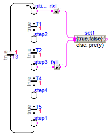
model Actions2 "Demonstrates rising and falling edge action blocks"
extends Modelica.Icons.Example;
Modelica_StateGraph2.Step initialStep(
nIn=1,
nOut=1,
initialStep=true,
use_activePort=true);
Modelica_StateGraph2.Transition T1(
use_conditionPort=false,
delayedTransition=true,
waitTime=1);
Modelica_StateGraph2.Step step2(
nIn=1, nOut=1,
use_activePort=false);
Modelica_StateGraph2.Transition T2(
use_conditionPort=false,
delayedTransition=true,
waitTime=1);
Modelica_StateGraph2.Step step3(
nIn=1, nOut=1,
use_activePort=true);
Modelica_StateGraph2.Transition T3(
delayedTransition=true,
waitTime=1);
Modelica_StateGraph2.Step step4(
nIn=1, nOut=1,
use_activePort=false);
Modelica_StateGraph2.Transition T4(
use_conditionPort=false,
delayedTransition=true,
waitTime=1);
Modelica_StateGraph2.Transition T5(
use_conditionPort=false,
delayedTransition=true,
waitTime=1);
Modelica_StateGraph2.Step step1(
nIn=1, nOut=1,
use_activePort=true);
Blocks.MathBoolean.RisingEdge risingEdge;
Blocks.MathBoolean.MultiSwitch set1(nu=2, expr={true,false});
Blocks.MathBoolean.FallingEdge fallingEdge;
equation
connect(initialStep.outPort[1],T1. inPort);
connect(T1.outPort,step2. inPort[1]);
connect(step2.outPort[1],T2. inPort);
connect(T2.outPort,step3. inPort[1]);
connect(T3.outPort,initialStep. inPort[1]);
connect(step3.outPort[1],T4. inPort);
connect(T4.outPort,step4. inPort[1]);
connect(step4.outPort[1], T5.inPort);
connect(T5.outPort, step1.inPort[1]);
connect(step1.outPort[1], T3.inPort);
connect(initialStep.activePort, risingEdge.u);
connect(risingEdge.y, set1.u[1]);
connect(step3.activePort, fallingEdge.u);
connect(fallingEdge.y, set1.u[2]);
end Actions2;
Modelica_StateGraph2.Examples.BasicStateGraphs.Actions3

model Actions3 "Demonstrates usage of TriggeredAdd action block" extends Modelica.Icons.Example;Modelica_StateGraph2.Step initialStep( nIn=1, nOut=1, initialStep=true, use_activePort=true); Modelica_StateGraph2.Transition T1( use_conditionPort=false, delayedTransition=true, waitTime=1); Modelica_StateGraph2.Step step2( nIn=1, nOut=1, use_activePort=true); Modelica_StateGraph2.Transition T2( use_conditionPort=false, delayedTransition=true, waitTime=1, use_firePort=true); Modelica_StateGraph2.Step step3( nIn=1, nOut=1, use_activePort=true); Modelica_StateGraph2.Transition T3( delayedTransition=true, waitTime=1); Modelica_StateGraph2.Step step4( nIn=1, nOut=1, use_activePort=false); Modelica_StateGraph2.Transition T4( use_conditionPort=false, delayedTransition=true, waitTime=1); Modelica_StateGraph2.Transition T5( use_conditionPort=false, delayedTransition=true, waitTime=1, use_firePort=true); Modelica_StateGraph2.Step step1( nIn=1, nOut=1, use_activePort=true); Modelica_StateGraph2.Blocks.MathInteger.TriggeredAdd add1( use_reset= true); Modelica_StateGraph2.Blocks.MathInteger.MultiSwitch set1( nu=2, expr={11,12}); equationconnect(initialStep.outPort[1],T1. inPort); connect(T1.outPort,step2. inPort[1]); connect(step2.outPort[1],T2. inPort); connect(T2.outPort,step3. inPort[1]); connect(T3.outPort,initialStep. inPort[1]); connect(step3.outPort[1],T4. inPort); connect(T4.outPort,step4. inPort[1]); connect(step4.outPort[1],T5. inPort); connect(T5.outPort,step1. inPort[1]); connect(step1.outPort[1],T3. inPort); connect(T2.firePort, add1.trigger); connect(T5.firePort, add1.reset); connect(initialStep.activePort, set1.u[1]); connect(step2.activePort, set1.u[2]); connect(set1.y, add1.u); end Actions3;
Modelica_StateGraph2.Examples.BasicStateGraphs.ParallelWithActions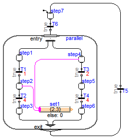
model ParallelWithActions
"Demonstrates usage of MultiSwitch block for branches executing in parallel"
extends Modelica.Icons.Example;
Parallel parallel(
initialStep=false,
use_outPort=true,
nEntry=2,
nOut=1,
nIn=1,
nExit=2,
use_inPort=true);
Modelica_StateGraph2.Step step1(
nOut=1, nIn=1);
Modelica_StateGraph2.Blocks.MathInteger.MultiSwitch set1(
use_pre_as_default=false,
nu=2,
expr={2,3});
Modelica_StateGraph2.Transition T1(
delayedTransition=true, waitTime=1);
Modelica_StateGraph2.Step step2(
nOut=1,
nIn=1,
use_activePort=true);
Modelica_StateGraph2.Transition T2(
delayedTransition=true, waitTime=4);
Modelica_StateGraph2.Step step3(
nIn=1, nOut=1);
Modelica_StateGraph2.Step step4(
nOut=1,
nIn=1,
use_activePort=true);
Modelica_StateGraph2.Transition T3(
delayedTransition=true, waitTime=2);
Modelica_StateGraph2.Step step5(
nOut=1, nIn=1);
Modelica_StateGraph2.Transition T4(
delayedTransition=true, waitTime=4);
Modelica_StateGraph2.Step step6(
nIn=1, nOut=1);
Modelica_StateGraph2.Transition T5;
Modelica_StateGraph2.Step step7(
nOut=1,
nIn=1,
initialStep=true);
Modelica_StateGraph2.Transition T6;
equation
connect(step1.outPort[1], T1.inPort);
connect(T1.outPort, step2.inPort[1]);
connect(step2.outPort[1], T2.inPort);
connect(T2.outPort, step3.inPort[1]);
connect(step1.inPort[1], parallel.entry[1]);
connect(step4.inPort[1], parallel.entry[2]);
connect(step4.outPort[1], T3.inPort);
connect(T3.outPort, step5.inPort[1]);
connect(step5.outPort[1], T4.inPort);
connect(T4.outPort, step6.inPort[1]);
connect(step4.activePort, set1.u[1]);
connect(step2.activePort, set1.u[2]);
connect(parallel.outPort[1], T5.inPort);
connect(step7.outPort[1], T6.inPort);
connect(T6.outPort, parallel.inPort[1]);
connect(T5.outPort, step7.inPort[1]);
connect(step3.outPort[1], parallel.exit[1]);
connect(step6.outPort[1], parallel.exit[2]);
end ParallelWithActions;